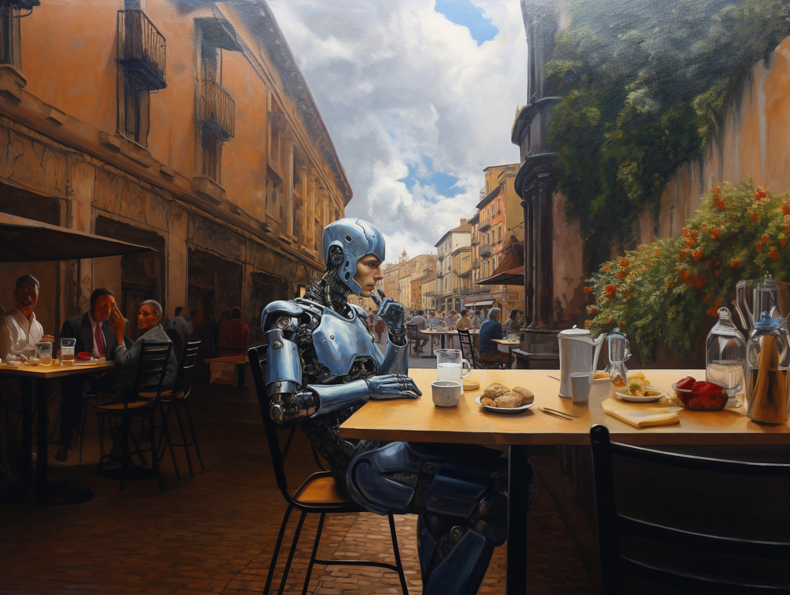

Transhumanism and Misanthropy
I recently saw a graffito announcing ‘Humanity sucks!’ Without knowing what the artist meant, one can imagine. The human world as we know it is a world of violence, greed, selfishness, and zealous self-destructiveness. Inequality, hatred, and indifference corrupt our treatment of other people. Brutality and exploitativeness stain our treatment of billions of animals. Global heating, philistine assaults on the arts, warmongering – these and other failings are standard entries in a misanthropic litany.
By misanthropy, I don’t mean a radical anti-social attitude or a hatred of human beings. Reclusion and hatred can be expressions of our misanthropic judgements, no doubt. But there is a much wider range of ways to express genuine misanthropic convictions. According to several recent philosophers, myself included, we ought to define misanthropy as a negative appraisal of the moral condition of humankind. It’s a verdict or assessment passed, not on individuals, but on humankind or human forms of life. Think of the eco-misanthropes – the greed, wastefulness and destructiveness they decry are features of social and economic systems, rather than (necessarily) vices of individual persons. Greed and our other failings are built into the system. If we look for these failings at the level of the individual, then we miss their collective manifestations.

The American writer Adam Kirsch refers to eco-misanthropy in a recent book on the ‘revolt against humanity’. Actually, there are two such revolts. One is Anthropocene antihumanism, an attack on the entrenched failings of humanity as it has come to be. The other is transhumanism, a diverse group of technologists, futurists, gurus and others who aspire to radically transform the human condition. Science and technology, they argue, can enhance our currently feeble mental and physical abilities. No sickness, no aging, no death, even. Moreover, we can acquire new sorts of mental and physical abilities and even opt for more radical ‘upgrades’. Future ‘post-humans’, depending on who you read, could move from one artificial body to another. The aim is a world of upgraded, enhanced creatures, brought into being by transhumanist methods – the condition of ‘posthumanity’. Super-intelligent, incapable of ageing and illness and effectively immortal, ‘posthumans’ represent the best future for humans. For one enthusiast, our extinction, if done well, could be ‘a career move for Homo sapiens.

What the two ‘revolts’ have in common, for Kirsch, are their shared ‘visions of a humanless world’. Anthropocene antihumanists anticipate our extinction as ‘a sentence we have passed on ourselves’. Sad as our demise may be, there will be major boons for most animals and the natural world. The artificial evils meted out to animals, such as factory farming, will come to an end.
In the case of transhumanists, matters are different – while Homo sapiens do disappear, they would be succeeded by ‘Humanity 2.0’. (One might be tempted to call this antihumanist, but, as we will see, transhumanists resist that negative label). For transhumanists, we humans ought to see ourselves as the early stages of a higher form of life. Our disappearance, bad as it may be for us, is better for the planet and, more optimistically, a vital stage in the evolution of intelligent life.
Anthropocene antihumanism seems clearly misanthropic. It expresses a strong and negative judgment on our moral condition. Human forms of life are suffused with moral failings, and this fact is manifested itself in increasingly ominous ways. A species that brings about its own end is seriously at fault – a sort of ironic species-level Darwin Award. But what of transhumanism? Is it, too, an expression of misanthropy? Is there a truth in one’s writer’s talk of transhumanism as a ‘futuristic misanthropy’? Is aspiring to create, albeit non-violently, a posthuman world itself a misanthropic ambition?
It can be hard to answer these questions. The transhumanist movement is diverse with many, often conflicting visions. Moreover, the modern misanthropologists don’t say much about it. But I think at least a lot of transhumanism is, at its core, misanthropic. Two scholars call posthumanism a reflection on ‘what it means to be human’, and that is certainly consistent with misanthropy. So there is conceptual work to do in trying to chart the connections between transhumanist and misanthropic perspectives on human life as we know it.
Misanthropy and transhumanism share one important conviction. The moral condition and performance of humankind are dreadful. No-one, except the most naïve, could look at the human world and pass a positive moral verdict. Hatred, greed and delusion are for the Buddha the three ‘unwholesome roots’ of human life. To that trio, one could add arrogance, cruelty, envy, hubris, indifference, laziness, self-deception and many others. Misanthropes and transhumanists agree, too, that these failings are sustained by features, such as embodiment, constitutive of the sorts of creatures we are. As ‘fleshlings’ with appetites, desires, needs, and fears we are susceptible to cowardice, covetousness and other failings. Our limited cognitive capacities also make us prone to bad moral conduct. We reason badly, jump to conclusions, and find our reasoning undercut by cognitive biases and our inabilities to calculate the long-term consequences of our actions. This is all worsened by our tribalism, aggressiveness and other legacies of our all-too-human primate inheritance. As one Reddit blogger neatly puts it, ‘we’re just apes that didn’t evolve to make world-impacting decisions’.

David E. Cooper: Necessary Vices
In our societies, an impressive array of vices is on display. Hypocrisy, greed, cruelty, prejudice… But what if many of these vices were necessary for human life?
The poor moral performance of humankind, coupled to our cognitive limitations, points to a pessimistic conclusion. For transhumanists and many misanthropes, there is little prospect for a radical improvement in our moral performance. Humans are constitutively incapable of virtuous forms of life. Posthumans, of course, can aspire to much more. If illness, aging, death and vices are parts of the human condition, then there can be a happy solution: become something more or better than humans. Transhumanists often refer to an ‘escape from the human condition’ and to liberation from ‘finite and mortal constraints’ as imposed by nature. In a rather theological style of thinking, post-humans are liberated from the imperfections of the flesh that sustains our vices and condemns us to toil, struggle, and death.
If this is right, then a common motivation of misanthropy and transhumanism is a keen sense of the moral failings endemic to humankind. As the human condition constrains our prospect for moral betterment, we must transcend it. A truly posthuman future is a world without us – Homo sapiens – but, for that very reason, also a world without callousness, reckless stupidity, narrow-mindedness and injustice. A world without us is a world without our all-too-human failings. The aspiration is to ‘create persons who are smarter and more virtuous’ than we are or can be. Such super-creatures will not be human, even if there is a kind of continuity between them and us. As another commentator puts it, transhumanists do have a ‘vision of a form of human existence’, of creatures liberated from ‘certain restrictions’ of the human condition. Whether these ought to be called humans – or posthumans – is not relevant to many misanthropes. The misanthropic points are that failings are endemic to human life – and no amount of social activism, political reforms, or philosophical teaching could remove them. I see that as a motivating misanthropy – albeit not one often emphasised in transhumanist rhetoric, which tends towards upbeat talk of ‘upgrades’, ‘liberation’ and so on. It also reflects the deeply misanthropic ethos of the posthuman vision.
As a sad fact, the morally best world is not any kind of human world. It will contain no humans, and be nothing like the human world as we know it. For Andrew Gibson, ‘critical post-humanist’ projects aim to replace ‘old, recidivist’ kinds of humans with morally superior post-humans.

I have said little about the coherence and the desirability of the posthuman ideals. Cultural theorists, philosophers, theologians and others offer powerful criticisms of transhumanist ideas and ambitions. For the record, I am sceptical of transhumanism, but that is irrelevant to my aims in this essay. I wanted to explore the conceptual connections of misanthropy to transhumanism. If I am right, the ambition to inaugurate a post-human world is rooted in a misanthropic verdict on our moral condition and a deeply pessimistic estimation of the prospects for its betterment. If so, that graffito was right – ‘Humanity sucks’, but, if the ‘techno-prophets’ are right, this will not be true of posthumanity.
◊ ◊ ◊

Ian James Kidd on Daily Philosophy:
Cover image: Midjourney.